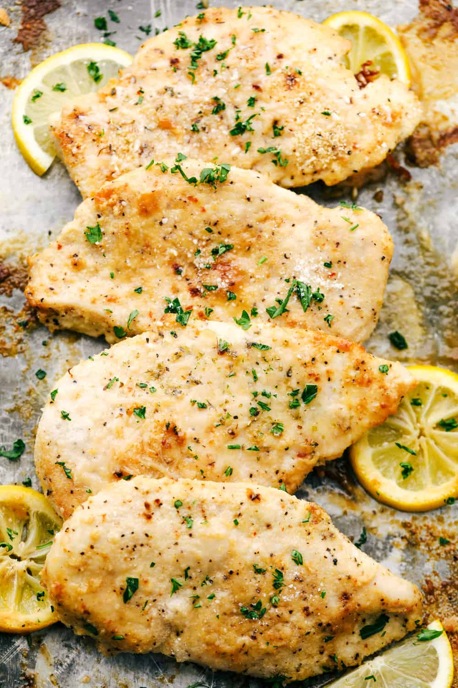

Baked Garlic Parmesan Chicken

Description
Breaded chicken breasts flavored with garlic and Parmesan cheese are baked
until golden and crispy for the easiest chicken dish ever. Serve with a
salad and pasta for a quick, scrumptious dinner.
Ingredients
- 2 tablespoons olive oil
- 1 clove garlic, minced
- 1 cup dry bread crumbs
- ⅔ cup grated Parmesan cheese
- 1 teaspoon dried basil leaves
- ¼ teaspoon ground black pepper
- 6 skinless, boneless chicken breast halves
Steps
- Gather all ingredients.
-
Preheat oven to 350 degrees F (175 degrees C). Lightly grease a 9x13
inch baking dish.
- In a bowl, blend the olive oil and garlic.
-
In a separate bowl, mix the bread crumbs, Parmesan cheese, basil, and
pepper.
-
Dip each chicken breast in the oil mixture, then in the bread crumb
mixture. Arrange the coated chicken breasts in the prepared baking dish,
and top with any remaining bread crumb mixture.
-
Bake 30 minutes in the preheated oven, or until chicken is no longer
pink and juices run clear.
- Serve hot and enjoy!